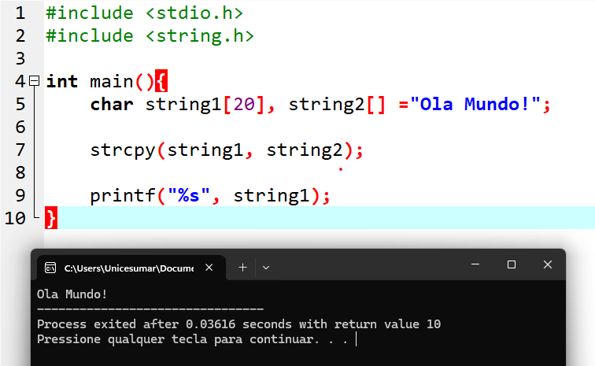
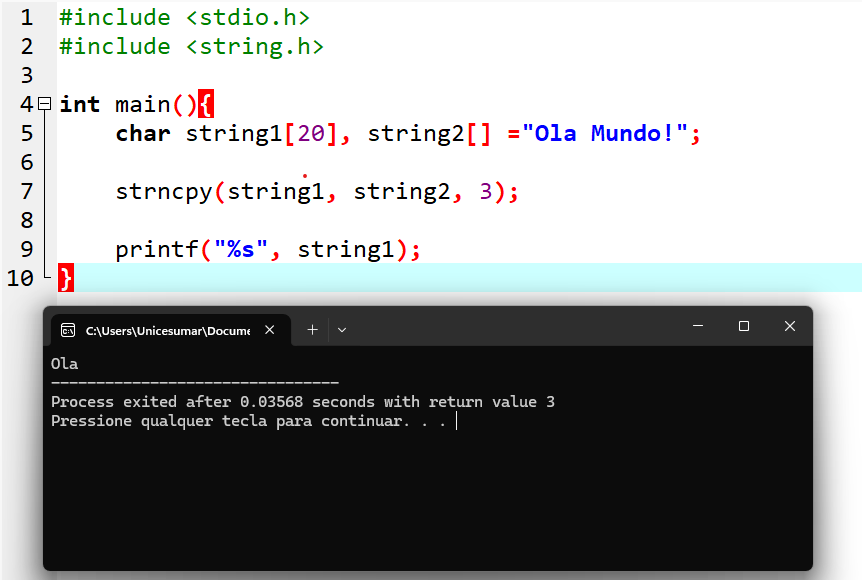
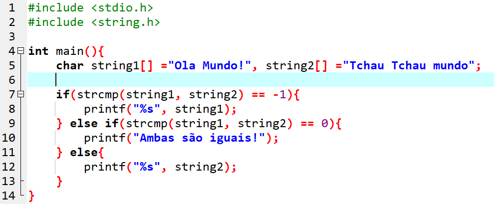
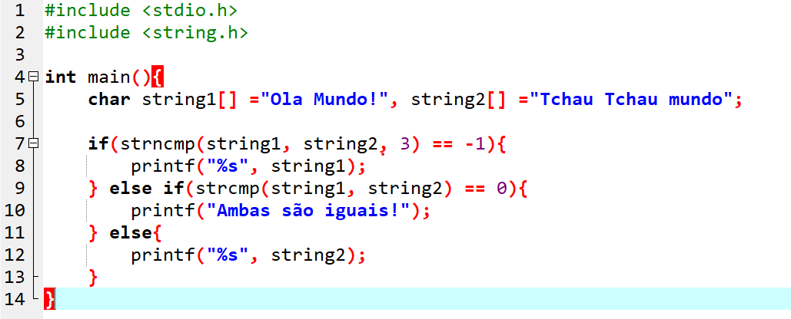
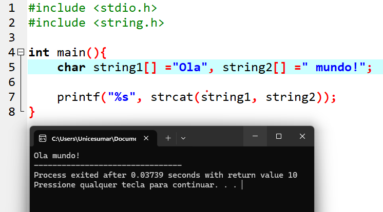
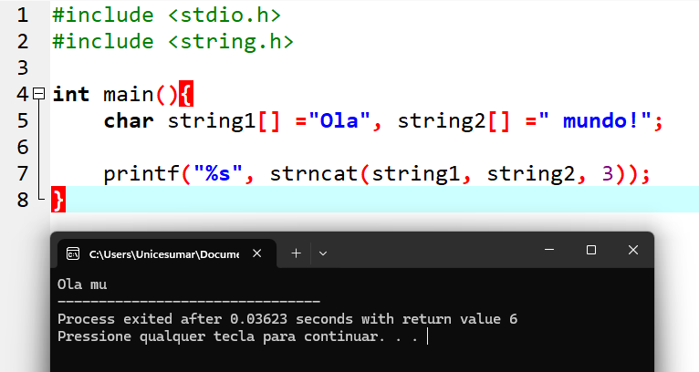
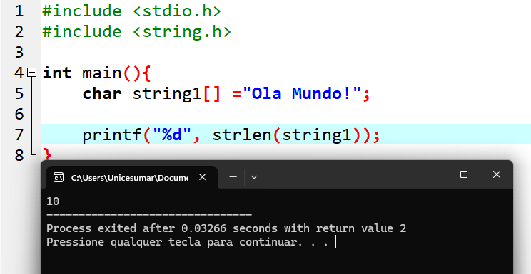

strcpy:
Copia o conteúdo de uma string para outra.
Sintaxe: strcpy(destino, origem);
A função copia todos os caracteres da string de origem para a string de destino,
incluindo o caractere final '\0'.

strncpy:
Funciona de forma semelhante à strcpy, porém permite definir a quantidade máxima de caracteres a serem copiados. Sintaxe: strncpy(destino, origem, n);

strcmp:
Compara duas strings. Sintaxe: strcmp(string1, string2);
Possui três possíveis retornos:
- Valor negativo: string1 é menor que string2
- 0: as duas strings são iguais
- Valor positivo: string1 é maior que string2

strncmp:
Funciona como strcmp, porém compara apenas uma quantidade específica de caracteres. Sintaxe: strncmp(string1, string2, n);

strcat
Concatena (junta) duas strings. Sintaxe: strcat(destino, origem);
A string de origem é adicionada ao final da string de destino.

strncat
Funciona como strcat, porém concatena apenas uma quantidade limitada de caracteres da segunda string. Sintaxe: strncat(destino, origem, n);

strlen
Retorna o tamanho de uma string (quantidade de caracteres antes do '\0').
Sintaxe: strlen(string);
